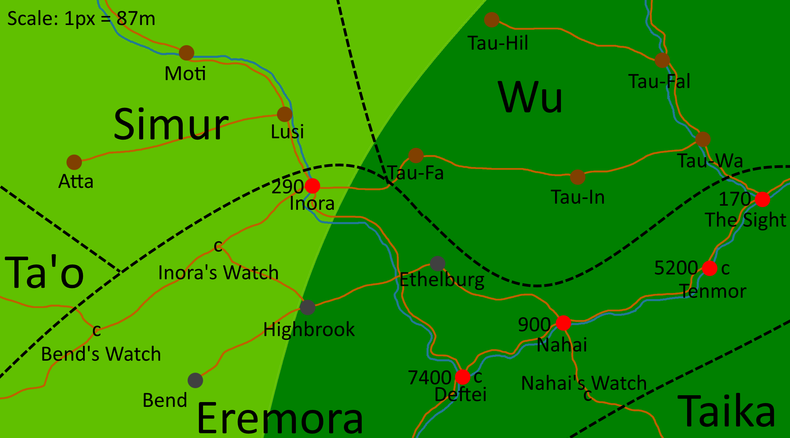
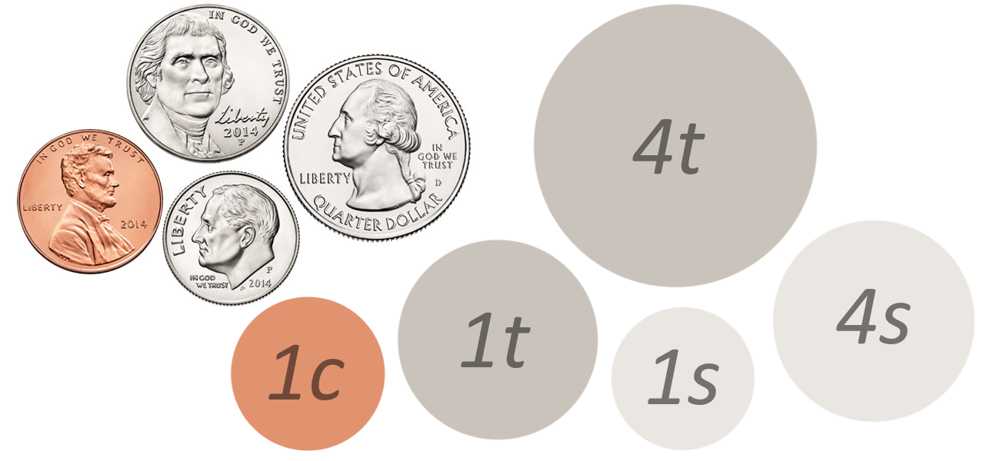
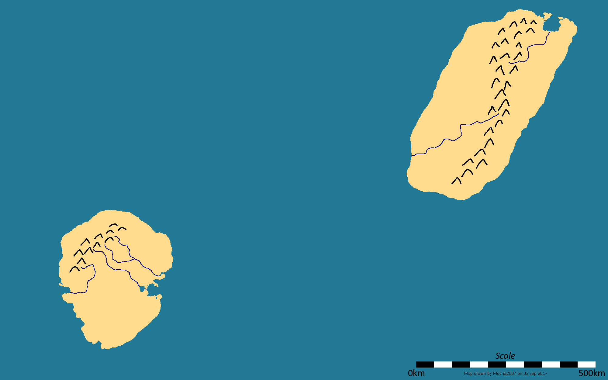
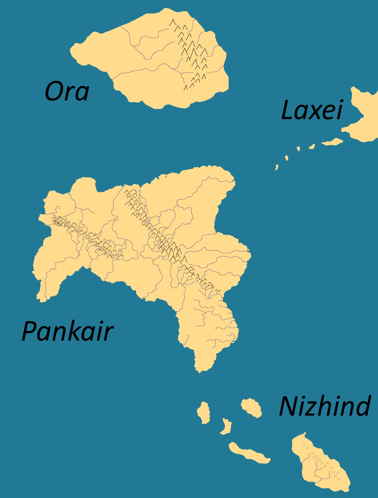

Note to any readers: this page has APNGs and SVGs, and is best viewed on one of Vivaldi, Firefox, or Chrome. I haven't tested other browsers, but browsers like IE/Edge and Safari are unlikely to display the images correctly.
The Akkaha is a major Pankairian river. It is 2,344 km long, just longer than the Colorado. Its Hausdorff dimension is approximately 1.18. On its mouth is situated Eremor. It empties into the Akkahan, part of the Southern Sea.
Eisen is a large gas giant, slightly more than nine times the mass of Jupiter, and thus it is the second-largest body in the Namei system, comprising just over 1% the total mass. It has many cloud bands, most of which alternate between dark khaki and olive, except one band in the northern hemisphere, which is decidedly khaki. There exist numerous temporary light-colored storms, but no permanent storms like our own Jupiter. The planet has a faint ring system, only visible from Maia during an eclipse of Namei from Eisen. Its rotation period is just over seven hours.
It has four major moons, one of which is an ice giant (Seter), and hundreds of minor moons, mostly captured asteroids in temporary orbits. The four major moons, in order, are:
The inner three major moons are in a 1:2:4 resonance, just like the Galileian moons. No moons lie within the rings, but there are four small asteroid moons just outside the ring system.
Eremor is the cradle of Pankairian civilization, and the capital of Eremora. It contains 15,000 people. Much of it sits on the mouth of the Akkaha, safe and secure on almost all sides. Despite its enormous power the capital province itself is quite small - about one-third the area of Hong Kong. The king's castle and administrative center is located on a large, heavily-fortified island (Victory Island) at its mouth. Much of the remaining city is protected by the Great Wall of Eremor, which is just over ten kilometers long. From Eremor, totality of solar eclipses can last longer then 14 minutes.
Written history began two thousand years ago, when a culture with an unknown name (Proto-Eremorans) first started constructing cities in the area. These cities likely engaged in trade with each other and other neighboring cultures, including the Eremorans. About one millenium after the first written records, the Eremorans, a local culture, conquered Eremor, and soon after, much of the lower river basin. Within a few centuries all of the Proto-Eremorans were assimilated into Eremoran culture, and all that remains of the mother culture is a handful of loans and myths. The hydronyms Akkaha and Akkahan are widely believed to be such loans.
The city has a hot semi-arid climate (Köppen BSh), with three main seasons: summer, monsoon and winter. The bay area itself receives much less precipitation during the monsoon than the areas east. The city and surrounding province is located in plant hardiness zone 12a.
Due to the width of the Akkaha and significant seismic activity, there is no bridge to the smaller part of the city on the opposite bank (Other Bank district). This side is mostly populated by fishers and farmers who use reed boats to cross the river. These small boats are the property of the community and may be used by anyone.
Eremora is the kingdom controlled by Eremor. It spans an area of roughly 30,000 km2 and contains about 750,000 people. They speak Eremorôm (Eremoran). Eremorans themselves call Eremor and Eremora Eremor, but here I separate them for clarity.
The kingdom of Eremora is about 1000 years old. In recent times, Inoran raiders have been threatening the positive relationship between Eremora and the Simur. Perhaps it is time to hire some mercenaries to deal with this issue...?
Eremora uses 5 coins, each 4 times as valuable as the one prior. The Aramat is worth about the same as a US Quarter. The Stanüudot has been less and less used over time since it is significantly bulkier than the other coins, but it still remains in use.
Falto is a tan tidally-locked hot Neptune orbiting Namei with a period of ten Earth days. Its mass is a little under twice that of Neptune. It has one major moon the size and appearance of Tethys, and five asteroid moons.
Kaznuk is an Oneian continent.
Neko and Miwa are islands northeast of Kaznuk.
Maia is a major moon of Eisen. It is slightly more massive and slightly larger than Earth. Its orbital and rotation periods are just under five and one-sixth Earth days. Its surface pressure is a little over two and a half that of Earth's, and its surface temperature is 96K. The atmospheric composition is roughly 59% H2, 39% N2, 1.6% CH4 (highly variable to region), and some trace noble gases and hydrocarbons. Because of these conditions which are clearly ideal to life, it too contains intelligent civilizations.
From Maia, when Eisen is in its full phase, it appears four times brighter than the full moon. Uto appears 32 times dimmer, Bolt 17 times, and Seter 3 times dimmer. All major moons are visible during day, if they are above the horizon. The minor moons are never brighter than Regulus, and thus can only be seen when neither Eisen nor Namei can be seen. The four inner minor moons have a maximum apparent magnitude that of Procyon, the eigth-brightest star in the night sky, but can dive to ninth magnitude in suboptimal conditions. Thus, they can all be easily seen for about half a local day. For the near side, this is the two hours Maia is Eclipsed by Eisen during the eclipsing seasons. For the far side, it is the half of the local day these are below the horizon. Even in the worst positions, they are never dimmer than sixth magnitude, and thus are easily viewable when one is away from major cities. It is occasionally eclipsed by the other three inferior major moons, especially Seter. Seter can appear very large from Maia (up to eight times the diameter of how the moon appears to us!), but never larger than Eisen. Since Eisen appears so bright when it is full, the entire moon is essentially in perpetual day for several hours.
Maians are the second-most advanced species of the unusually fortunate Namei system. Their advancement is comparable to mid-19th century Earth. They know of all the planets but Dicito and Mannu, the furthest out.
According to their top scientists, other bodies in the Namei system are unable to harbor life, due to their atmospheres containing an excess of the toxic molucules sulfur dioxide and molecular oxygen. Some theorize exotic "water-based" life could exist on Oneia or its recently discovered moon, using hypothetical "lipids" instead of the normal acrylonitrile cell membranes all known life uses. Of course, these so-called "lipids" not only do not occur naturally, but have also been failed to be synthesized in a laboratory! Such "water-based" life would also have to deal with the damaging effects of using such a chemically reactive substance, a struggle methane-based life does not face. Even if somehow such life could exist, it is unlikely to have developed metalworking due to the strong corrosive effects of water, damaging any tools made beyond repair. Thus, even if intelligent water-based life existed, it could not develop the tools necessary to approach glorious Maian intelligence.
Namei is the star of the system. Its spectral class is K5V, and the star is about 4 billion years old. The planets Oneia and Eisen orbit this star, along with:
All the planets inferior to Don have been known since antiquity to all Nameian civilizations. Don has only recently been discovered by the Nikki and Maians; it is always dimmer than Neptune from Earth. Neuve was known since antiquity for all civilizations; its maximum brightness is 23% higher than that of Uranus from Earth. Dicito is only 85% brighter than Pluto at best, and was only just recently discovered by the Nikki. Mannu is 28% dimmer than Neptune, and was also only just recently discovered by the Nikki. Both are unknown to other Nameian Civilizations.
Nikki is a tidally locked moon of Oneia. Like Oneia, Nikki is also inhabited. Nikki is about 1/3 water by area. The entire world is constrolled by the Nikki Empire. The technology is roughly that of 1950s Earth.
The Nikki Empire has, in various, sometimes fractured forms, controlled Nikki for most of recorded history. In the earliest recovered fragments of text, it seems they only stretched for a small fraction of the world. A few hundred years after the recorded history, emperor Ntusint the Great conquered most of the remaining world, save for a few sparsely populated regions. It was not until contemporary times the empire was able to extend its reach to these remotest of places. The Empire is 800 Million people strong. While the moon once spoke many languages, all of these have since been surplanted by the Nikki Language.

Oneia is a planet orbiting Namei. It orbits 0.32 au away and has a period of 75 earth days, or just over 62 Oneian days. Oneia has one major moon, Nikki, along with some minor moons and a planetary ring.
Solar Eclipses follow cycles similar to Earth, with the 1-month, 62-month, 311-month, and 684-month cycles being the most important. 684 local months is only 37 minutes longer than 11 local years. Compare this to the Metonic cycle, which loses 4 hours, despite it being extremely close to perfect. 311 local months is only 2 hours, 21 minutes longer than 5 local years, and 62 local months is only 5 hours, 19 minutes shorter than 1 local year. Eclipses each of these cycles tend to be very similar to the last. Because of Nikki's inclination, there are specific seasons when eclipses can happen, convering about two-thirds of the orbit. These seasons contain about 21 solar eclipses each. Any particular location will have about four totality events in each of these eclipse seasons.
There are six major meteor showers throughout the year:
In Eremoran skyculture, there are thirty-two constellation. Twelve are of the Eremoran Zodiac:
* - Eremorans have different words for dice depending on their shape. You could translate this as 'the Die', but there would be an identically-named constellation (a D6).
The planet is quite visually similar to earth. However, Oneia's surface is covered by a significantly higher fraction of land; over two-fifths of the surface is land. The planet and moon are tidally locked, with a period of just under 29 earth hours. Since the moon is tidally locked, there is no Oneian equivalent to the terran concept of a 'month'. The planet is significantly warmer and wetter than Earth, thus snow and aridity is rare and restricted to the extremes.
The entire world is constrolled by various factions and races. The technological development of the most advanced part of the planet is that of Earth's early iron age, although it's not hard to find cultures still using bronze or stone tools. The two continents containing iron-age civilizations are Pankair and Ora.
To Oneia, the appearance of the night side of Nikki is much like the night side of Earth. To Oneians though, it just appears as if the moon shimmers in the dark, and since this is a relatively recent phenomenon, there are few myths, and the great philosophers of the time argue over what causes the shimmering. These theories range from the rational, great endless fires or noctilucent minerals, to the more paranormal, such as the spirits of the deceased.
Ora is a continent of Oneia, north of Pankair. It covers 0.4% of the planet's surface. It is home to the Orans, a civilization notable for the invasion of Pankair. Not much else is known about them to the Pankair...
The most advanced continent of Oneia, and one of the only two to have iron-age civilizations, is Pankair. The continent is so large it convers nearly 1% of the entire planetary surface. Its mountainous terrain was the perfect spot for small city-states to crop up, and in the past few centuries, large empires formed. The oldest of these city-states is Eremor, an arid city at the mouth of a river. Over the past few decades and continuing still is the Oran invasion of the continent. The current state of the once-prosperous continent is now chaos and instability.
Seter is a major moon of Eisen. It is just over eight Earth masses, about the size of Planet Nine. Its orbital and rotation periods are three and one-sixth Earth days. It is identical in composition and extremely similar in appearance to Eisen, but the banding is much less developed. The temperate light bands are by far the largest, taking perhaps as much as three-quarters the surface. An interesting "chrome" effect happens in the darker bands when one views the outer limb of the atmosphere. The effect is visible on Eisen too, but is far more subtle. It is thought to be caused by clouds of ice in the upper atmosphere.
Victory Island is located at the mouth of the Akkaha, in Eremor. At its longest, it is 3 km long. It is primarily notable as the site of Castle Eremor, Chiefs' Convenience, and the Eremor College. People travel to and from the island in boats, most of which are located in the northern docks. The island itself is not nearly as inhabited as the mainland city since the island primarily contains administrators, upper-class, and apartments for their servants.